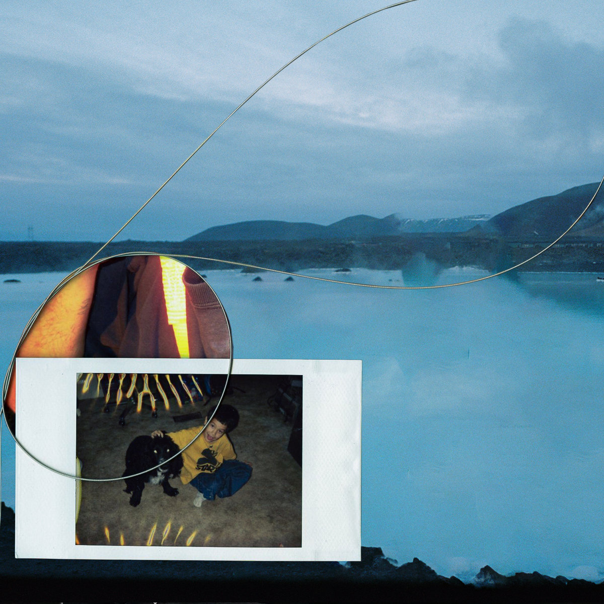

WIP - Untitled Feature Film (aka A Rock Hard Place aka Brick Into Straw aka Can You Desert Again?)

Parker Corey
A collection of work scattered through music, video and design over the years. Much of it is for Injury Reserve of course. I'm open to working on things that are really good or pay well without being too bad. reach out thru parkercoire@gmail.com
only video / / / only sound / / / only 𝒹ₑₛᵢ𝓰ₙ
~ ~ ~
WIP - Untitled Feature Film (aka A Rock Hard Place aka Brick Into Straw aka Can You Desert Again?)

Feb 26, 2024 - Dizzy by RiTchie feat. Amine. Music video; dp, edit and color by me; directed by Nathaniel Ritchie.

Feb 12, 2024 - RiTchie Valens by RiTchie. Music video; dp, edit and color by me; directed by Nathaniel Ritchie.

Sept 5, 2023 - New Joy by Slauson Malone 1. Music video; codirected and edited with Jasper Marsalis, dp & color.

Aug 1, 2023 - Bye Storm/Double Trio by Injury Reserve/By Storm. Songs & video.

July 12, 2023 - Déjà Vu by Loraine James feat. RiTchie. Music video; directed by me.

Sept 28, 2022 - remix of "Ghost" by Body Meat